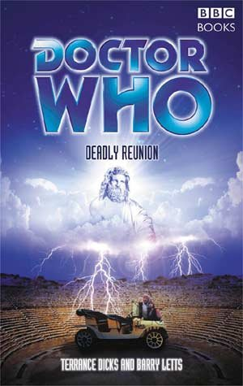

|
Deadly Reunion
|
BASIC PLOT DOCTOR COMPANIONS MATERIALISATION CIRCUIT PREPARATORY READING CONTINUITY REFERENCES Pg 35 "There's one lot - used to be the Mesopotamian gods, I think- that get their kicks from using men's lives like a chess game. Call themselves the Players." Players, Endgame. Pg 70 "It's like the Players. This is his game." Players, Endgame. Pg 126 "His capture by the Time Lords had ended in forced regeneration and exile to Earth." The War Games. "He was, after all, a Time Lord. He walked in Eternity." Pyramids of Mars. Pg 198 "'Sleep is for tortoises,' said the Doctor." He says this in The Talons of Weng-Chiang too. Pg 200 "Using techniques learned long ago from his hermit mentor on Gallifrey, the Doctor kept his mind calm and peaceful" This hermit was first mentioned in The Time Monster and seen in Planet of the Spiders. Pg 202 "One of the deadliest drugs in the galaxy, in a class with the notorious skar." Skar features in Catastrophea and Mean Streets. Pg 226 "And when I say run - run." This was the second Doctor's catchphrase, made more amusing for having Benton say it. Pg 280 "However freak weather conditions mean that festival attendees and civilian population may need assistance." Freak weather conditions also feature in The Claws of Axos. OLD FRIENDS AND OLD ENEMIES NEW FRIENDS AND NEW ENEMIES Corporal Clarke. Sgt Slater.
CONTINUITY COCK-UPS PLUGGING THE HOLES [Fan-wank theorizing of how to fix continuity cock-ups] FEATURED ALIEN RACES Pg 64 Cerebus, a three-headed dog-like creature. Pg 67 A Centaur. Chimaera (half lion, half goat). Pg 68 A Satyr. Pg 78 A sea creature with serpents for limbs, a cavernous mouth and two staring eyes. Pg 83 A six foot slug with a face like a vulture. A giant spiderish thing with too many limbs, a proboscis the size of an elephant's trunk and an abdomen so full of blood it flops along on the ground. A bat-headed skeletal creature with a swollen belly and human hands. A small furry beast. Pg 86 They're not aliens, but there are a variety of ghosts in the underworld. Pg 89 Medusa. FEATURED LOCATIONS Pg 8 Zante. Pg 43 Corfu. Pg 47 Kerkira. Pgs 41/55 Albania. Pg 64 The Underworld. Pg 122 UNIT HQ (presumably in London), the 1970s. Pg 125 Essex. Pg 127 Hob's Haven. IN SUMMARY - Robert Smith? |
|
 |